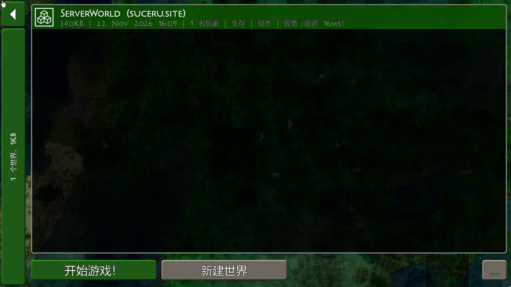
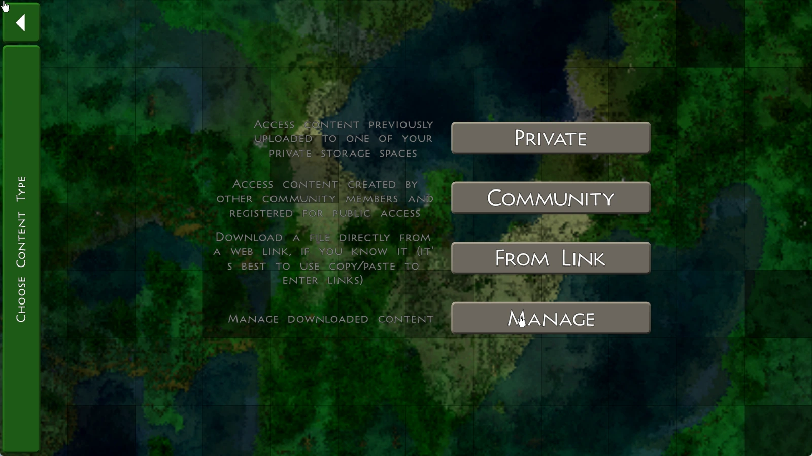
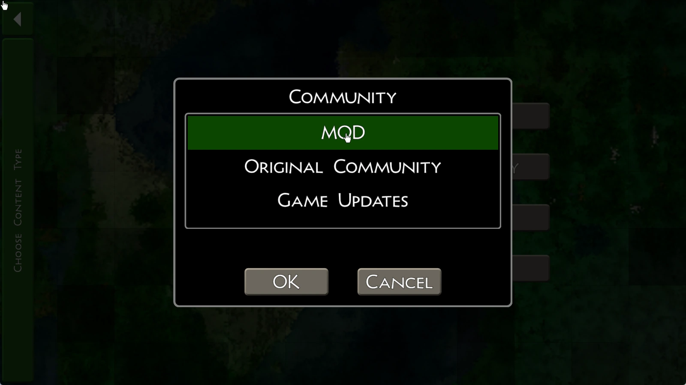

Windows
64 位 · 免安装
ZIP · 61.1 MB游戏 2.4.40.9
下载 Windows 版
CNB源下载

不装任何 Mod 时，玩法与原版一致。

安装后，菜单和游戏内文字就会显示为中文。

从「内容 → 社区 → MOD」打开列表，搜索并下载模组。

在「内容 → 管理」选中模组，按当前状态选择安装或卸载。

安装 SuMultiplayer 后，在选世界界面发现并加入联机房间。
64 位 · 免安装
ARM64 · 手机 / 平板
64 位 · 桌面版
.zip，选择「全部解压缩」。[SuAPI]Survivalcraft 文件夹，双击 Survivalcraft.exe。.Apk。.tar.gz 到可写目录。[SuAPI]Survivalcraft 文件夹，在该目录打开终端并运行 ./Survivalcraft。su-zh
在游戏内安装即可。点击截图可放大查看。

在首次启动的英文主菜单点 Content。

在内容页面点 Community 打开社区选择框。

选中 MOD，点 OK 进入模组列表。

看到 Download Successful 后点 OK。点击左上角箭头退出模组列表，再从管理页面返回。看到 Restart Required 后点 OK。
重启后，内容界面的菜单已经是中文。点左上角箭头即可回到中文主菜单。